Your accepted 33.5 mm sleeve is unchanged. Tees replace unused fourth branches. Two top elbows gain integral rear guy eyes. A small two-head jig uses existing PVC as a reference rail for marking cuts with the Husky ratcheting cutter.
Blender model · Measuring and assembly PDF · Full guide · Download kit
| Part | Single | Stacked | Print bounds mm |
|---|---|---|---|
| ELBOW | 2 | 2 | 133.314 x 133.314 x 53.345 |
| GUY_ELBOW | 2 | 2 | 133.314 x 133.314 x 53.345 |
| TEE | 8 | 12 | 136.627 x 133.314 x 53.345 |
| CROSS | 4 | 8 | 136.627 x 136.627 x 53.345 |
| MAG_SLEEVE | 48 | 80 | 20.0 x 86.75 x 53.345 |
| Configuration | Pieces | PETG kg | Hours | Runs | $6 PVC sticks | Subtotal* |
|---|---|---|---|---|---|---|
| single | 64 | 2.273 | 92.6 | 23 | 8 / $48 | $93.47 |
| split_s | 104 | 3.640 | 148.5 | 36 | 14 / $84 | $156.80 |
*PVC + PETG at $20/kg. Add paper, magnets, adhesive, tooling and ground support. Net single-gate savings versus the all-cross version: 255 g and 9.7 hours, including the new top eyes.
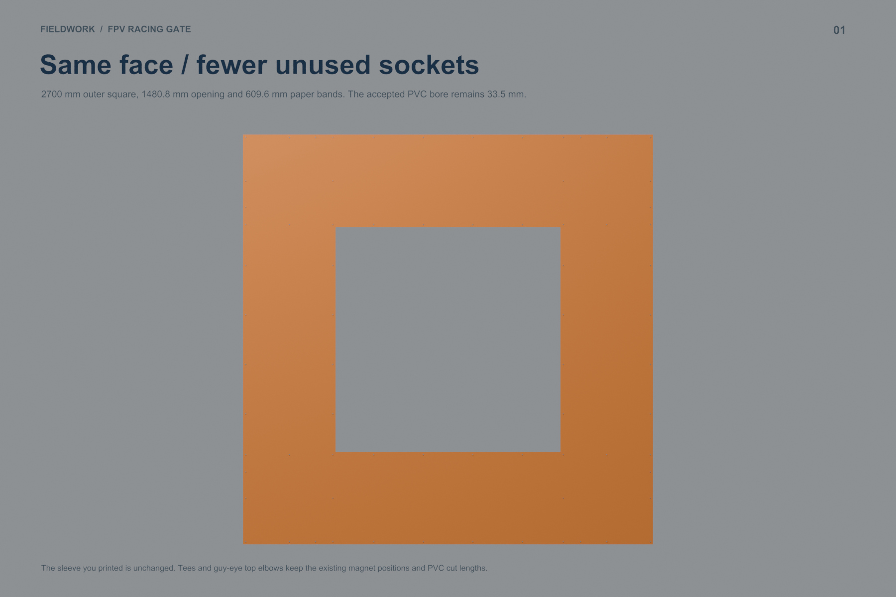
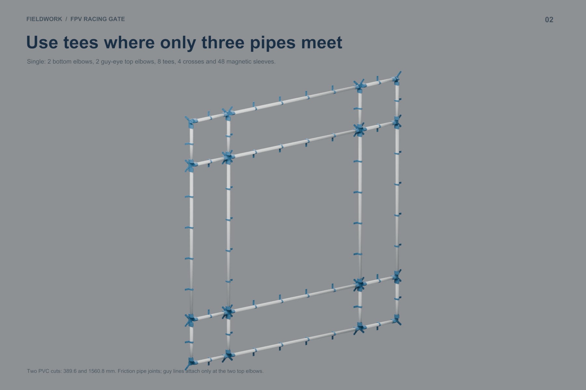
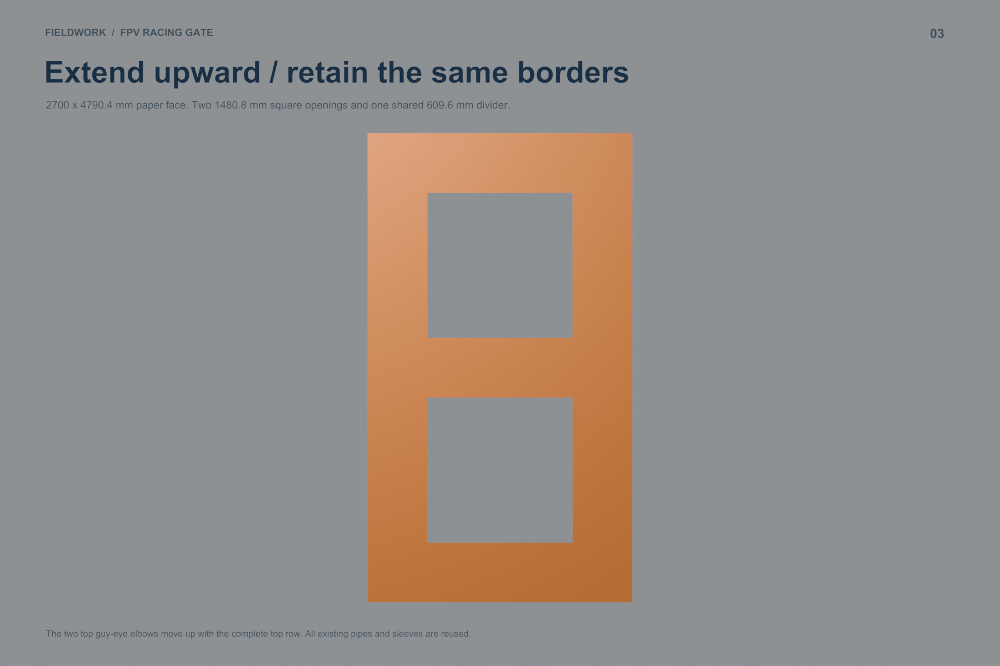
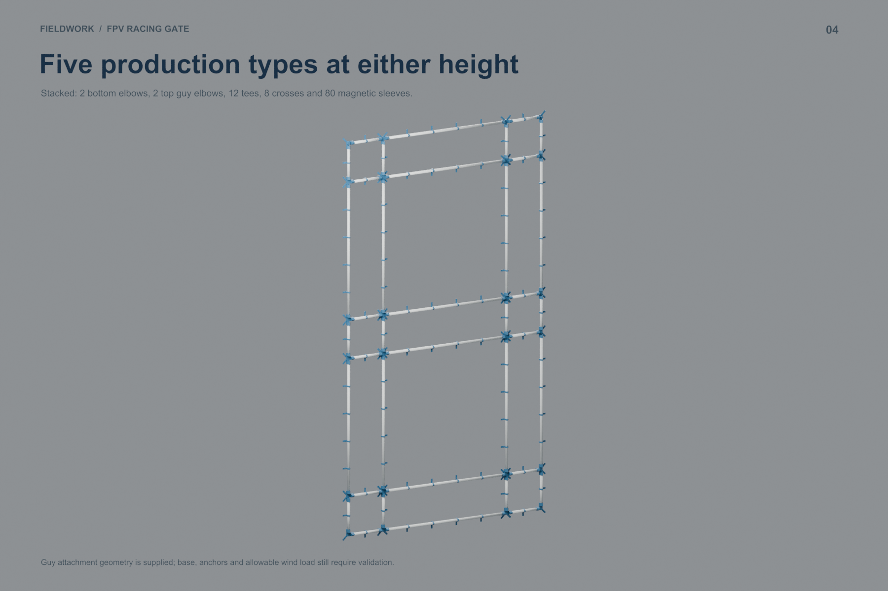
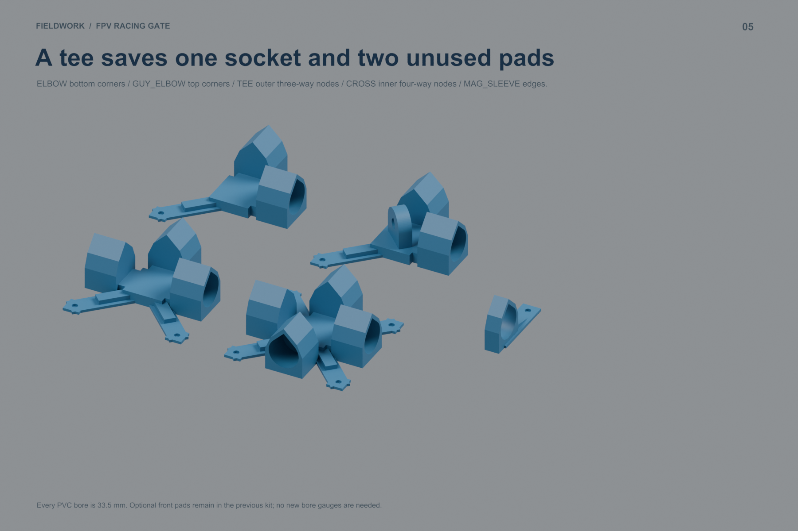
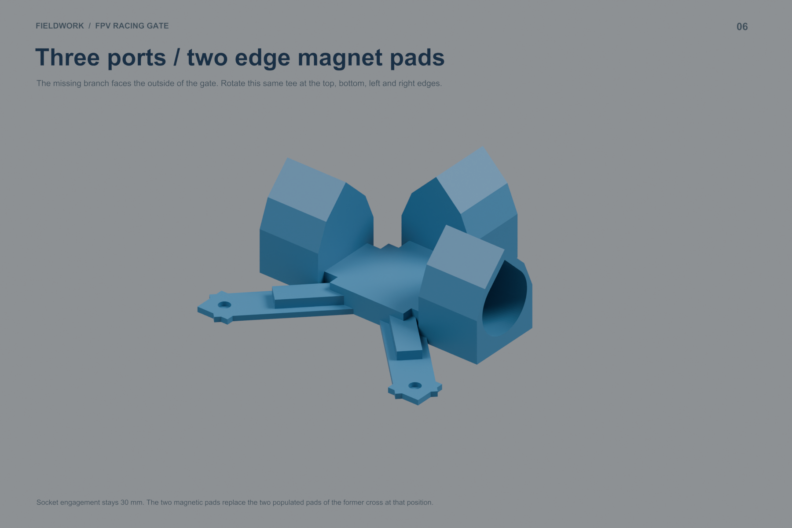
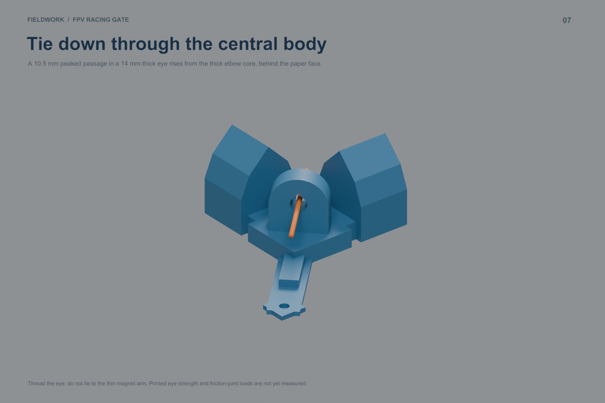
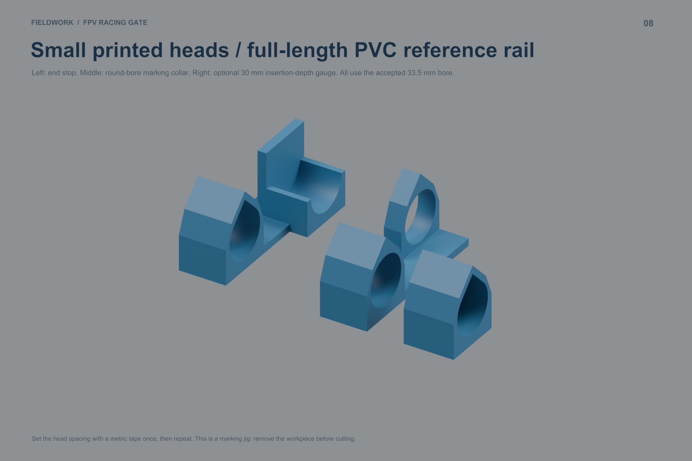
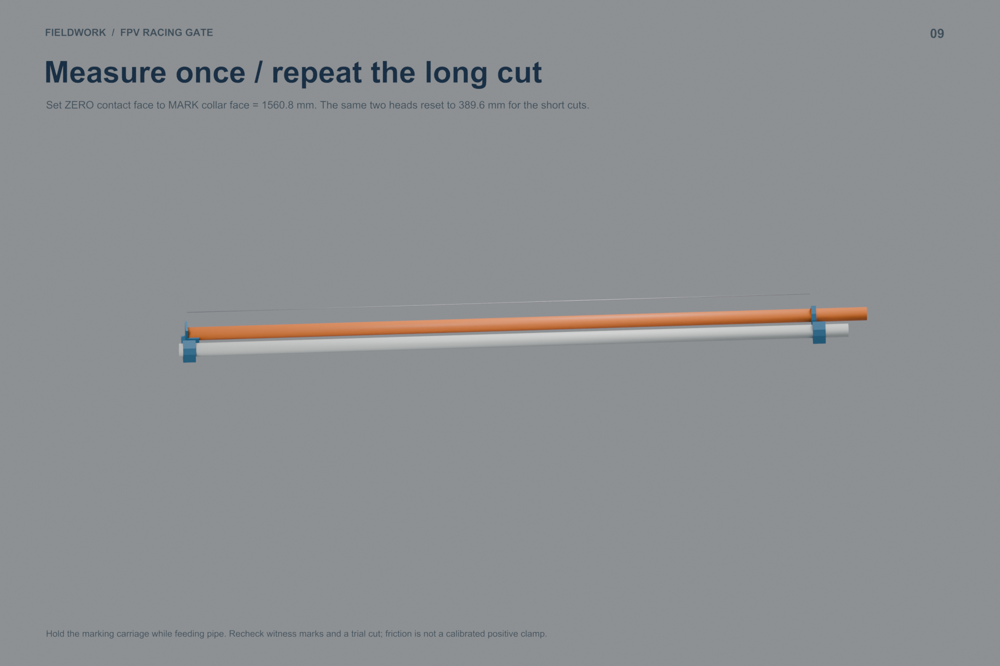
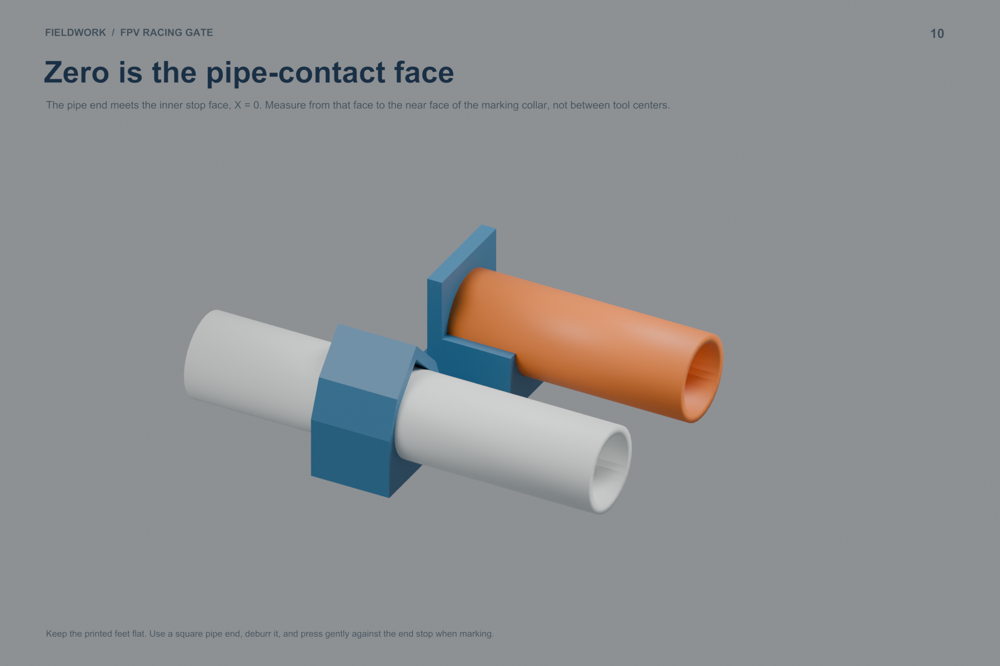
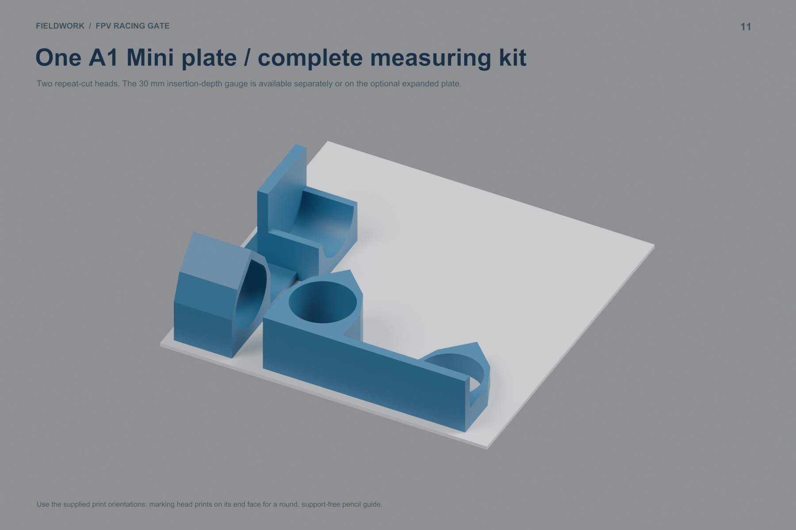
Parts · Print queue · PVC cuts · Stock layout · Nodes · Sleeve positions · Magnets · Paper cuts · Assembly map · Paper map
Parts · Print queue · PVC cuts · Stock layout · Nodes · Sleeve positions · Magnets · Paper cuts · Assembly map · Paper map
New print jobs · Workshop tools · Upgrade parts · Upgrade PVC · Digital checks
All parts fit the A1 Mini and all supplied plates slice without supports or warnings. The longer sockets, new tools and guy eyes need physical testing. The eye has no assigned load rating. No printer job has been submitted.
{kind=link}
{kind=link}
{kind=link}
{kind=link}